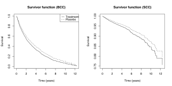

The blupsurv Package

FUNCTION
The blupsurv package contains tools for fitting proportional hazards models to clustered recurrent events data.
The model captures dependence within clusters and between processes by nested pairs of correlated random effects, specified only through their first two moments. Estimation proceeds by means of an iterative Expectation--Maximization--type algorithm in which the random effects are replaced by their orthodox best linear unbiased predictors, formulated and estimated under an auxiliary Poisson model. This approach obviates the need to specify the frailty distribution.
Univariate and bivariate recurrent events processes are permitted.
OBTAINING
To install the package directly within R type
install.packages("blupsurv", repos="http://R-Forge.R-project.org")
or see the R-forge project page for source and binary downloads.
DOCUMENTATION
Users should consult the documentation (PDF), which is also provided within the package.
Developers and statisticians should consult the annotated source code.
AUTHOR